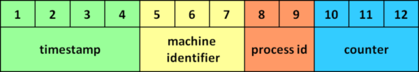
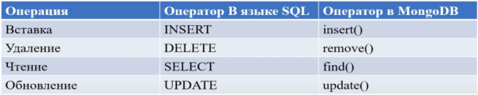
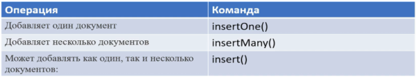

MongoDB - NoSQL база данных (нереляционная база данных)
https://www.mongodb.com/ - Официальный сайт
• База данных состоит из коллекций
• Каждая коллекция имеет свое уникальное имя
• Коллекция состоит из документов, например:
{
_id: ObjectId(7bf78ad8902c)
title: 'MongoDB',
description: 'Simple MongoDB Database',
by: 'proselyte',
url: 'proselyte.net',
tags: ['proselyte tutorials', 'NoSQL', 'MongoDB'],
developers: [
{
developer:'developer1',
specialty: 'Java Developer'
},
{
developer: 'developer2'
specialty: 'C++ Developer'
}
]
}
Типы данных:
• String - используется для хранения символьных строк. В MongoDB используется кодировка UTF-8.
• Arrays - используется для хранения массивов значений по одному ключу.
• Binary data - позволяет хранить бинарные данные.
• Boolean - используется для хранения логических (true / false) значений.
• Date - используется для хранения текущей даты или времени в UNIX формате.
• Double - используется для хранения значений с плавающей точкой
• Integer - используется для хранения целочисленных значений. В зависимости от сервера может быть как 32-битным, так и 64-битным.
• Code (JavaScript) - Используется для хранения JavaScript кода в документе.
• Min key/ Max key - используется для сравнения значений с наибольшим и наименьшим BSON (Binary JSON) элементом.
• Null - используется для хранения значения Null.
• Object - строковый тип данных; используется для встроенных документов.
• Object ID - используется для хранения ID документа.
• Regular Expression - используется для хранения регулярных выражений.
• Symbol - используется также, как и String, но, обычно, резервируется для языков, которые используют специальные символы.
• Timestamp - используется для хранения даты и времени
Идентификатор документа (состоит из 12 байт):

1...9 - гарантируют уникальность среди других машин
Установка:
1. https://www.mongodb.com/try/download/community - Скачать MongoDB Community Server
2. https://www.mongodb.com/try/download/compass - Скачать MongoDB Compass
3. Установить Compass, Community Server
4. Создать папку для хранения баз данных C:\data\db
Запуск:
1. Запустить командную строку в папке C:\Program Files\MongoDB\Server\3.6\bin
2. Запустить сервер комндой mongod.exe (порт по умолчанию 27017)
3. Если есть необходимость использовать другой путь к файлам (отличный от C:\data\db), его можно передать при запуске MongoDB:
◇ mongod.exe --dbpath d:\test\mongodb\data
4. Запусить еще одно окно командной строки и запусить оболочку MongoDB shell командой mongo.exe
◇ use test - устанавливает к качестве используемой базы данных “test” (если базы нет, то будет создана автоматически); db бдет представлять текущую базу данных “test”
◇ db.users.save({name: “John”}) - создаем коллекцию “users”; с помощью метода save() добавляем объект {name: “John”} в коллекцию “users”. В сообщении WriteResult({ "nInserted" : 1 }) - 1(кол-во выполненных записей)
◇ db.users.find() - вывод на экран всех объектов коллекции “users” в базе данных “test” (_id - первичный ключ для каждого документа, также доступен через id)
◇ show dbs - вывести все имеющиеся базы данных
◇ db - вывести использующуюся в данный момент базу
◇ show collections - вывести все коллекции в текущей базе данных
◇ db.stats() - статистика по текущей базе данных (размеры указаны в байтах)
◇ db.users.stats() - статистика по коллекции users
◇ db.dropDatabase() - удалить текущую базу данных
◇ db.help() - перечень команд
Базовые функции при работе с базами данных:

db.createCollection(имя_коллекции, свойства_коллекции)
Добавления в коллекцию (при вставке документа коллекция создается автоматически):

Метод save() работает таким же образом, как и метод insert(), в случае, если мы не указываем _id. Если же мы указываем данное поле, тогда документ перезапишет все данные документа с таким _id.
Метод findOne() возвращает только один документ.
db.users.insertOne({name: “Tom”, age: 32, languages: ["english", “spanish”]}) (пробелы можно опускать)
db.users.insertMany([{name:"Bob", age:26, languages:["english","french"]}, {name:"Alice", age:30, languages:["english","geman"]}]) - принимает массив
db.users.insert({name: “Tom”, age: 32, languages: ["english", “spanish”]}) - после вызова на консоль выведется кол-во добавленных записей
document=({name:"Bill", age:32, languages: ["english", "french]}) - определяем документ
db.users.insert(document) - добавляем документ
db.users.renameCollection("new_users") - переименование коллекции
db.new_users.find() - вывод всей коллекции
db.new_users.find().pretty() - вывод всей коллекции в структурированном виде с табуляцией и переводом строк
db.new_users.find({name:"Tom"}) - вывод всех документов коллекции, у которых параметр name="Tom"
db.new_users.find({name:"Tom", age:32}) - вывод всех документов коллекции с такими параметрами: name="Tom", age=32
db.new_users.find({language: “english”}) - вывод всех документов коллекции, у которых массив language содержит элемент “english”
db.new_users.find({name: /T\w+/i}) - вывод всех документов коллекции, у которых значение ключа name начинается с буквы “T”; /T\w+/i - регулярное выражение T - первая буква, \w+ - все буквы
db.new_users.count() - кол-во элементов в коллекции
db.new_users.find({name:"Tom"}).count() - кол-во элементов в коллекции, у которых параметр name="Tom"
db.new_users.distinct("name") - вывести уникальные значения ключа name всех элементов коллекции
db.new_users.drop() - удаление коллекции
db.ИМЯ_КОЛЛЕКЦИИ.find()
db.ИМЯ_КОЛЛЕКЦИИ.update(КРИТЕРИЙ_ВЫБОРА, ИЗМЕНЁННЫЕ_ДАННЫЕ)
db.ИМЯ_КОЛЛЕКЦИИ.remove(КРИТЕРИЙ_УДАЛЕНИЯ)
Projection (проекция) - необходимые данные документа коллекции.
db.ИМЯ_КОЛЛЕКЦИИ.find( {}, {АТТРИБУТ: 1} )
Ограничение количества документов, получаемых из коллекции:
db.ИМЯ_КОЛЛЕКЦИИ.find().limit(КОЛИЧЕСТВО_ДОУМЕНТОВ).skip(КОЛИЧЕСТВО_ДОКУМЕНТОВ)
db.ИМЯ_КОЛЛЕКЦИИ.find().sort( {АТРИБУТ: 1} )
db.ИМЯ_КОЛЛЕКЦИИ.ensureIndex( {KEY: 1} )
db.ИМЯ_КОЛЛЕКЦИИ.aggregate(ОПЕРАЦИЯ_АГРЕГАЦИИ)